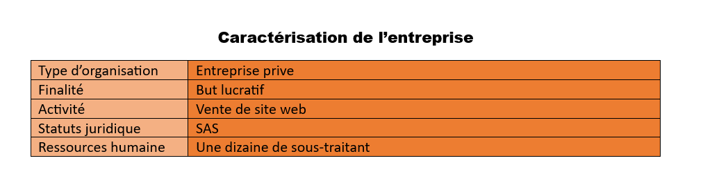

Accueil
STAGE 2
Stage BTS : 09 janvier ~ 17 fevrier 2021
Présentation de l'entreprise
L'entreprise a été créé en 2012, elle utilise Wordpress logiciel. L'entreprise propose des formations permettant aux clients de développer leurs propres sites sans expériences dans le domaine. En 2017,l'entreprise a commencé à développer leurs sites en créant des modules, des themes et commencer à coder en Symfony et React JS.
Présentation de projet
L’objectif de ce stage était de créer un site permettant à des parents avec des enfants de s'inscrire via un formulaire qu'uniquement l'administrateur peut voir avec certain stats. Ce site permettra alors aux parents d’enregistrer leurs enfants dans le cadre d’un camp de vacances.
L’interface web doit permettre :
L'inscription des enfants à une école est une étape cruciale pour les parents, qui cherchent à offrir le meilleur avenir à leurs enfants. Pour faciliter cette démarche, il est important de proposer un processus d'inscription simple et intuitif, qui permette aux parents de choisir parmi différents choix en fonction de leurs besoins et de leur budget. Les utilisateurs doivent être informés des différentes options disponibles, ainsi que du prix de chaque choix, pour prendre une décision éclairée. Le formulaire doit permettre aux parents de faciliter l'inscription de leurs enfants en remplissant, avec la possibilité de personnaliser les formulaires en ajoutant des sections ou en modifiant les prix. Pour faciliter la gestion des inscriptions, il est également utile d'avoir des statistiques sur le nombre d'enfants inscrits, leur âge, leur classe, etc. Ces données peuvent aider à prendre des décisions stratégiques, la planification budgétaire. Cette façon d'inscription claire et personnalisable permettra d'aider les parents à prendre des décisions éclairées et à inscrire leurs enfants dans un bon camp de vacances.
Premier formulaire

Formulaire enfant
Statistiques
Conclusion
Ce stage m'a permis de renforcer mes bases en Symfony en ORM et en développement Orienté Object. Il m'a aussi permis de savoir gérer mon temps de manière autonome. Il m'a également montré l'importance de se documenter sur le langage ou avec le frameWork qu'on utilise.